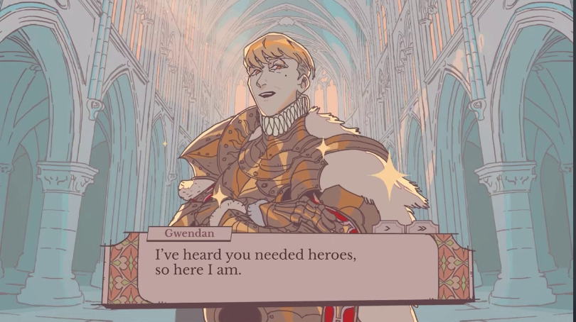

Can a drawing tool build a kingdom?
Four asset types, reconstructed with TurtlePen commands from a 76-second recording. Compare the art, inspect each attempt, and try the layers in a small dialogue scene.

Original game footage. Reference material is kept separate from the recreated assets.
Editable native artwork. The original frame is not embedded in this render.

Art production, reusable layers, readable silhouettes, compositing, export quality, and dialogue presentation.
Character animation, authored stories, quests, economy, time loops, saves, audio, and a complete game. Visual similarity is assessed separately from structural validation.
Try the court scene
A presentation test with independently loaded assets and new sample dialogue. Use Next or the arrow keys. This is not the original game's simulation.
Shall we put that claim to the test?